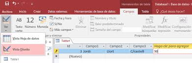
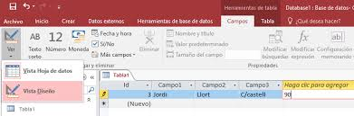

© Realizado por Luis M. Salinas Uban Agradecimiento a LibreTexts por su contenido de Tipos de Consulta igualmente por el contenido de Creacion dde una tabla y a GCF por el contenido de ¿Qué son y cómo crear informes?
 
